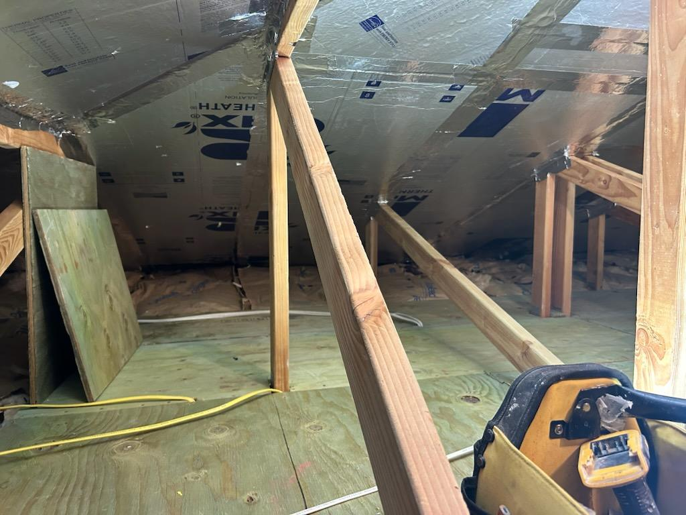

Clean removal and replacement of drywall after leaks, roof damage or flooding.
Once the source of water is fixed and the structure is dry, we replace damaged walls and ceilings and bring the surfaces back to a smooth, paint ready finish.



Every leak is different, but the damage usually shows up the same way. Soft drywall, staining and mold risk if the area stays wet too long.
Broken supply lines, slow leaks in walls and leaks from upstairs units that soak ceilings and walls.
Water that finds its way through the roof and shows up as stains or soft spots in ceilings and soffits.
Condensation or drain line issues around air handlers that damage surrounding drywall.
We coordinate with your plumber, roofer or mitigation company so repair work happens at the right time.
Wet or compromised drywall is cut out to solid framing. This helps prevent future problems and gives a solid base for new material.
New drywall is installed, taped and finished to match surrounding surfaces, including texture where needed.
Surfaces are left smooth and ready for primer and paint. We keep the work area as clean as possible throughout the project.
Common questions from Oahu homeowners dealing with water damaged drywall.
Yes. We require that the leak or moisture source is resolved and the area is completely dry before installing new drywall. Replacing drywall over a wet or still-leaking area causes the same damage to repeat.
Yes. We are familiar with the insurance repair process on Oahu and can coordinate directly with your adjuster or mitigation company to make sure our work starts at the right stage of the project.
Your mitigation company will confirm when moisture readings are within acceptable range. This varies by the extent of the damage and drying equipment used. We do not install new material until the structure is confirmed dry.
Share what caused the damage, where it is located and whether you are working with an adjuster or restoration company.